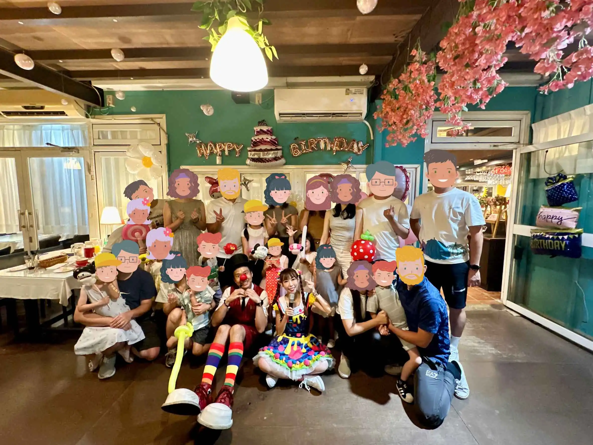

桃園生日派對策劃：魔術秀 × 唱跳姐姐 × 造型氣球
阿勃勒餐廳包場慶生紀實｜打造孩子開心、大人放心的「儀式感」派對體驗
📍 地點：桃園市大園區｜清惜的家 阿勃勒
桃園家庭派對首選：多元娛樂的一站式魅力
位於桃園大園區的 「清惜的家 阿勃勒」，以其充滿綠意與溫馨感的環境，成為在地包場辦理親子生日派對的熱門場地。 在這次的慶生活動中，氣球大叔 Sony 獲邀與 **「唱跳姐姐」** 聯手，為小壽星與滿場的嘉賓打造一場沉浸式的歡樂饗宴。

節目亮點：魔術秀與動感唱跳的完美契合
一場成功的派對需要高潮迭起的節奏。活動一開始由 唱跳姐姐 帶領孩子們進行熱情的帶動跳，消除陌生感；隨後由 氣球大叔 Sony 帶來震撼感十足的 氣球魔術秀，並在互動中折製出一件件精緻的角色造型氣球。 這種組合能確保現場笑聲不斷，同時滿足孩子對於視覺驚喜與動手拿禮物的雙重渴望。

- ✨ 一站式服務： 包含場地氣球裝飾建議、魔術主秀與互動唱跳，省去家長對接多家廠商的麻煩。
- 🛡️ 安心慶生： 專業表演者掌控現場秩序，讓家長能專心用餐與親友交流、拍照記錄。
- 🎁 客製禮物： 現場折製小朋友心儀的英雄或公主造型氣球，誠意滿滿。
「我們把派對的繁瑣細節化為魔法，是為了把最珍貴的擁抱與時間留給家人。」 — 氣球大叔 Sony
專業推薦：桃園派對表演與造型氣球專家
氣球大叔 Sony 深耕桃園多年，不論是大園、桃園區、中壢或是青埔，我們致力於為每個家庭創造「獨家記憶」。如果您也正在尋找桃園地區的高品質生日派對表演，無論是餐廳包場、自家宅邸或社區交誼廳，Sony 都能提供您最專業的娛樂策劃服務。
🔥 更多桃園在地與親子表演推薦：
- 👉 桃園在地活動：桃園區新住民親子活動｜多元文化氣球魔術秀紀實
- 👉 品牌一站式：IKEA 品牌活動紀錄｜客製化氣球與品牌互動策劃
- 👉 創意主題秀：台北信義小王子派對｜客製 IP 造型氣球人偶表演
- 👉 抓週紀錄：大安區週歲派對｜夢幻佈置與魔術互動整合服務